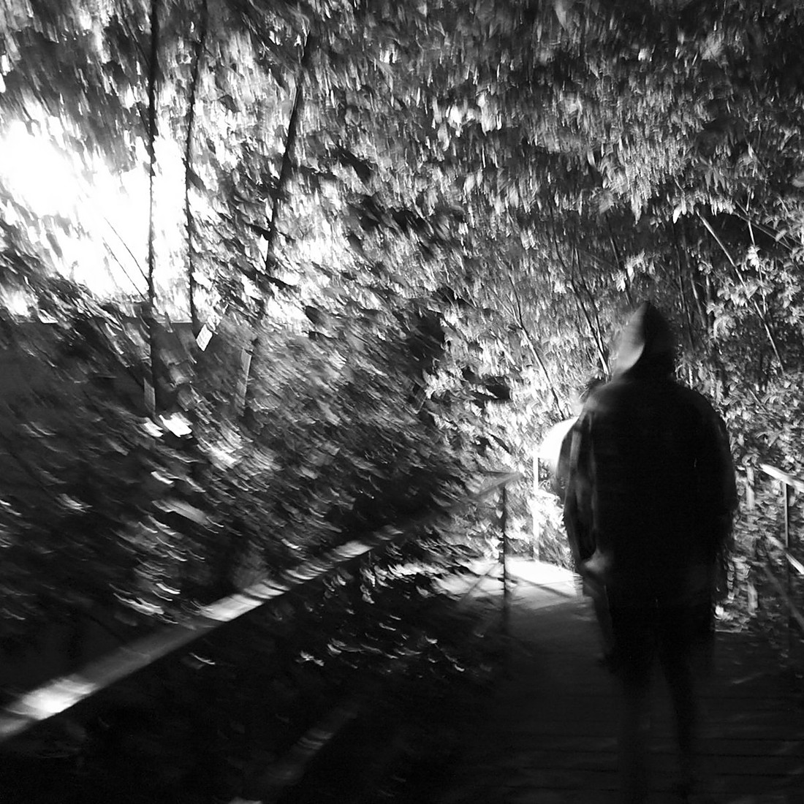
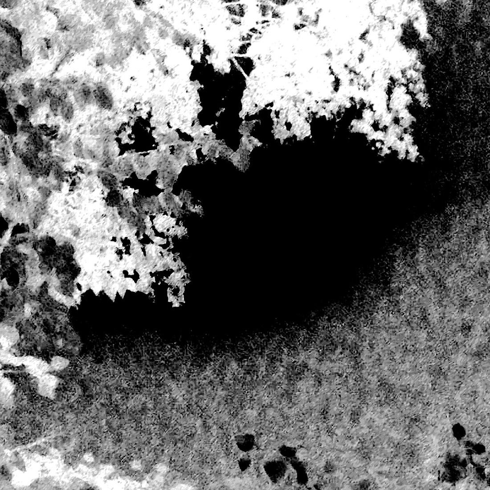
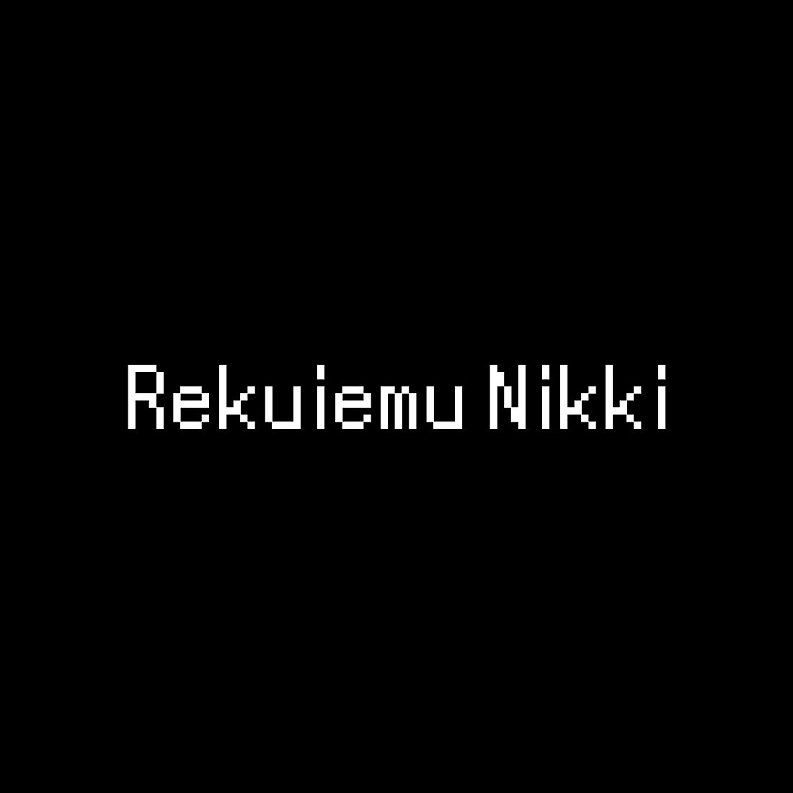
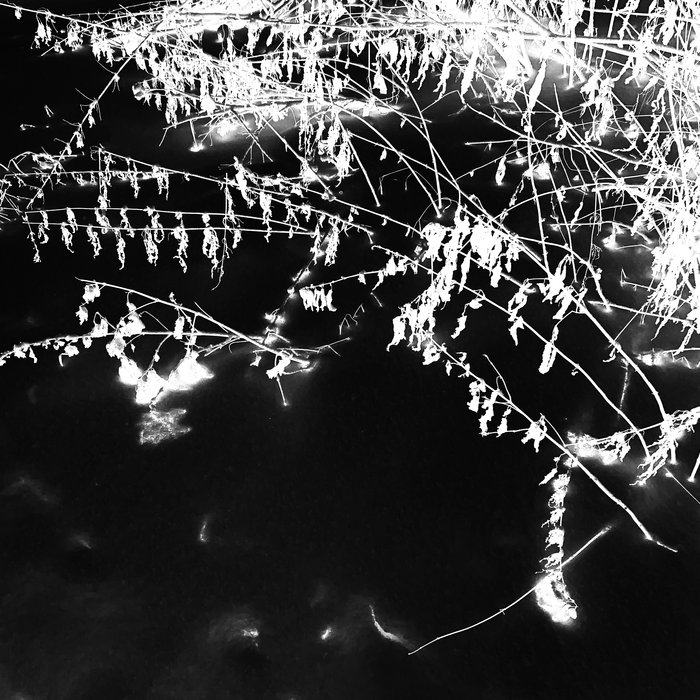
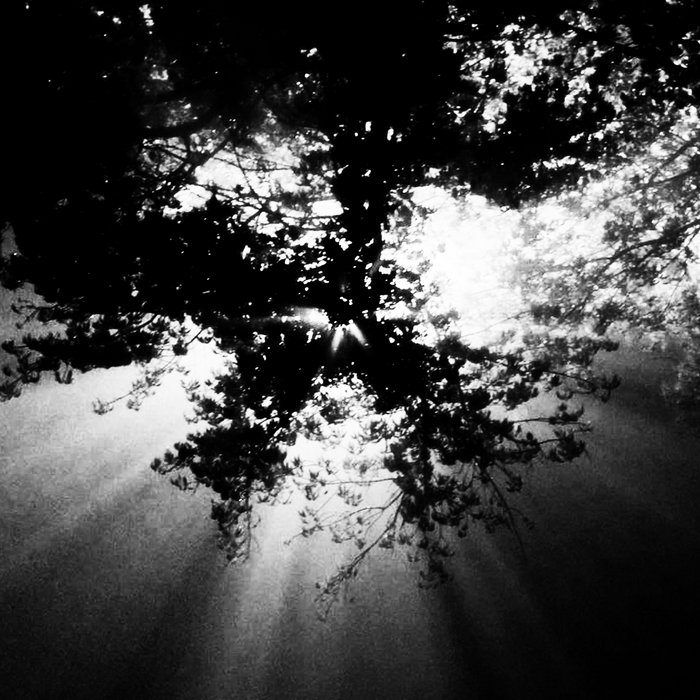
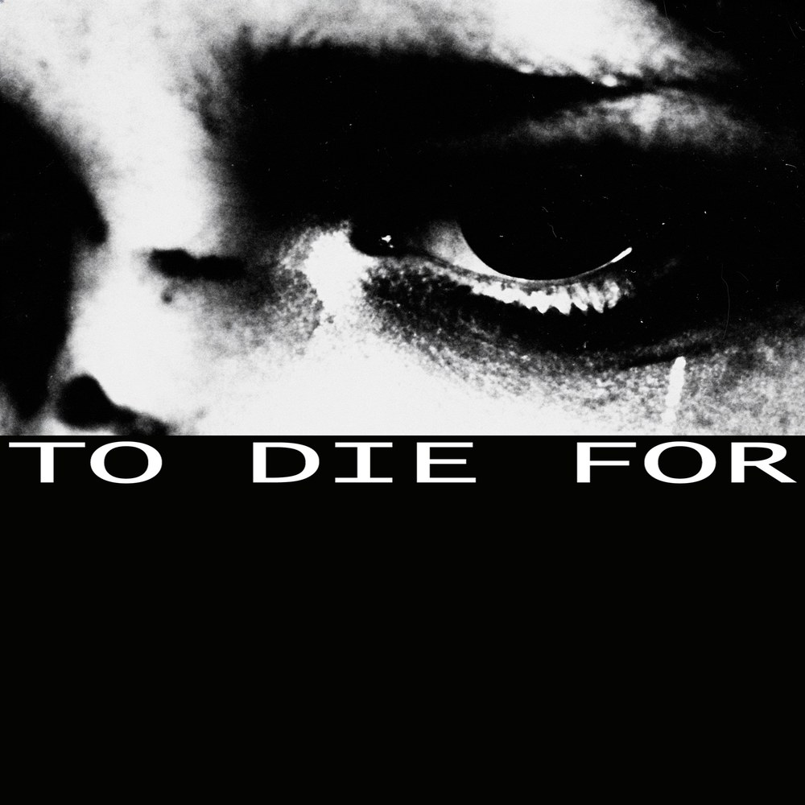
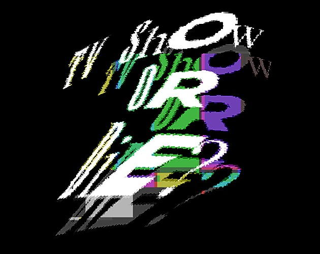
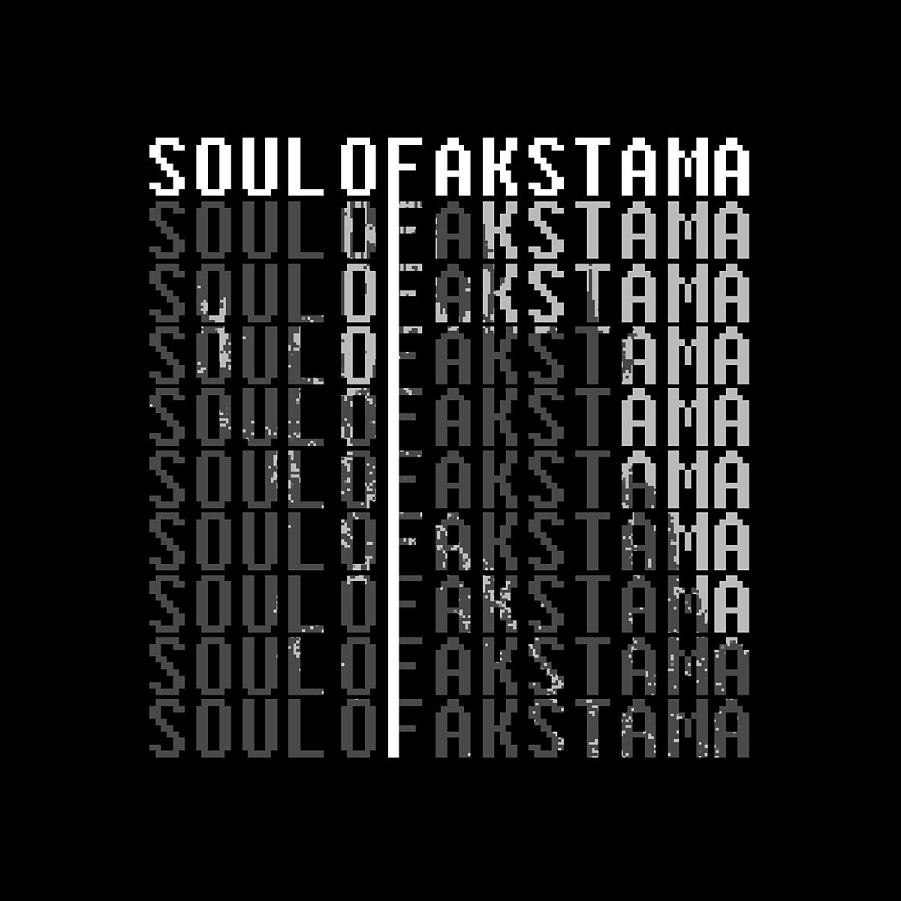
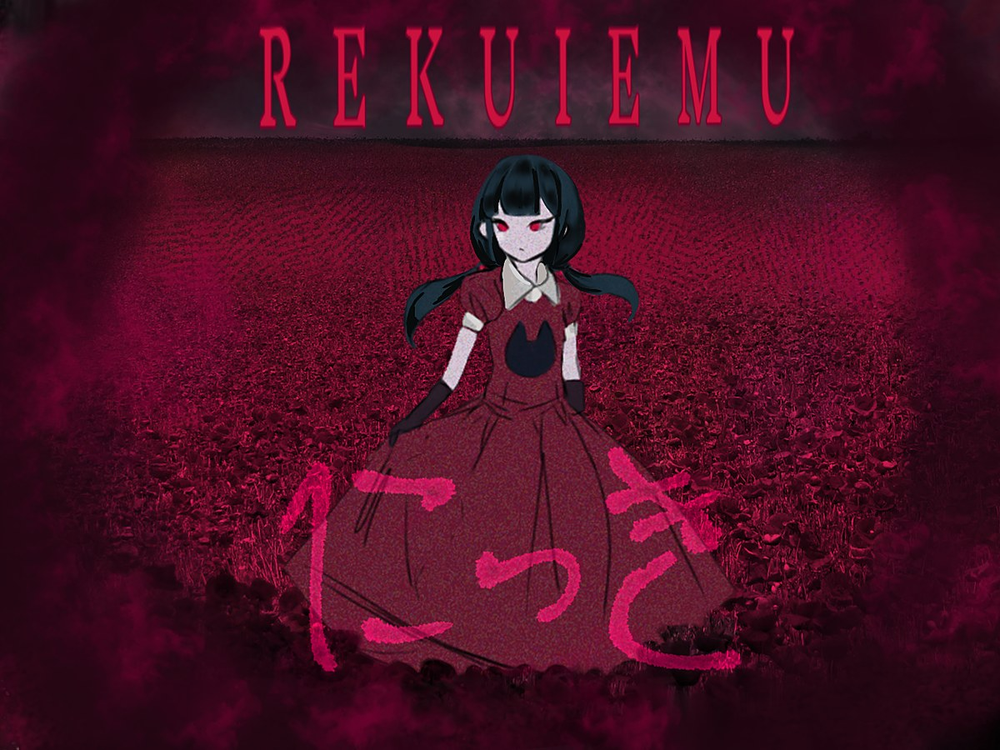

Demokira
Hi, I'm Sargis Dskhkunyan aka Demokira — a Creator making short indie games, experimental music, videos and AI content.
Hi, I'm Sargis Dskhkunyan aka Demokira — a Creator making short indie games, experimental music, videos and AI content.
side a / audio
Standalone releases and soundtracks for indie games — mine and other people's.






side b / interactive
Short narrative games from me, as well as other game jam projects.
visual novel
A short visual novel about a guy who gets into trouble for money. Took 1st place in the soundtrack category with the soundtrack written by me.

playvisual novel
A short visual novel that tells the story of a mirror located in Akstama Castle

playsurreal adventure
A Yume Nikki fangame, about exploring the mind of young Julie

playwrite buffer / notes
Short notes: work-in-progress updates, thoughts, breakdowns.
I have so many ideas, but little time and a lack of inspiration to bring them to life.
You might be expecting something new from me, but there probably won't be anything until the end of the year.
I’ve created my own page. I’ll try to populate it as things progress.